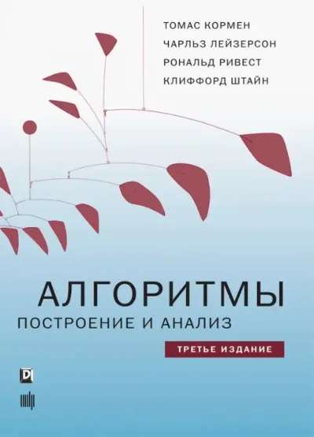

Стрим 122Добро пожаловать
Приступаем к изучению
Алгоритмы: построение и анализ · Глава 2 · 3 доклада
Спикеры вечера Антон ПомазковАртём Никифоров
Антон ПомазковАртём Никифоров
КнигаАлгоритмы: построение и анализТомас Кормен, Чарльз Лейзерсон, Рональд Ривест, Клиффорд Штайн
Антон ПомазковАртём Никифоров
 Клиффорд Штайн
Клиффорд ШтайнСтрим 122
Программа вечера
Глава 2Приступаем к изучению
Сортировка вставкой
Дальше
Что далее